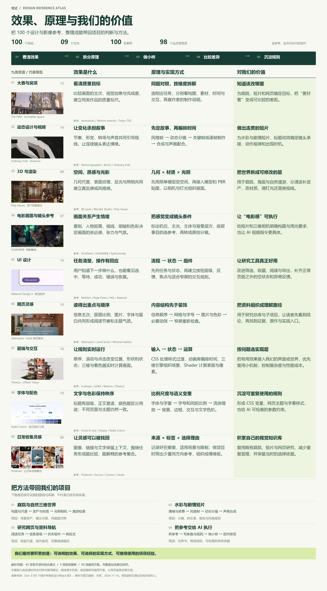

先判断它提供什么。
奖项是质量标尺，图库和电影库提供素材与镜头参考，规范组织任务与状态，前端和三维工具让规则实时运行。根据任务把它们接成制作路线。
A FIELD GUIDE TO GOOD DESIGN VOL. 001 / 2026
对照真实预览，看懂效果、拆清原理。
把 100 个参考入口，转成庭院、短片、研究网页与 AI 创作中能执行的决定。
100 个网站 09 个方向
OUR UNDERSTANDING
我们要积累的是能解释、能试做、能继续使用的方法。
奖项是质量标尺，图库和电影库提供素材与镜头参考，规范组织任务与状态，前端和三维工具让规则实时运行。根据任务把它们接成制作路线。
指出构图、光线、文字层级、镜头时长或动作反馈。区分作者公开的实现过程、我们的视觉推断与通用方案，先选一个可解释的小机制试做。
庭院留下空间与用光方案，短片留下分镜和节奏，网页留下阅读路径与状态组件；交给AI时写清参数、保持项、可变项与验收依据。
看清效果 → 拆分原理 → 做小样 → 比较差异 → 沉淀规则
100份逐站解析 · 98站有真实预览。45项官方资料结合建议、5项视觉推断、50项通用方案；静帧不能替代完整交互，四条项目路线仍是后续复用建议。
原作缩略图与综合解析；完整逐站依据仍见目录详情。

ALL RESOURCES / 001—100
跨越设计、影像与代码，打开你的参考视野。
预览为官方作品图或站点页面图，点击可放大并查看来源。具体作品与工具效果可从「看示例」进入。
试试另一个关键词，或清除当前筛选。
YOU'VE REACHED THE END. NOW MAKE SOMETHING.
BRING IT INTO OUR WORK
以下是面向我们现有创作方向的复用路线，尚未据此改动其他项目。
A SMALL DAILY PRACTICE
根据原文方法整理：一次只看一个站，
用 15 分钟完成一次有目的的观察。
带着一个问题：这次想学排版、用光，还是转场？
记下一处具体细节：字号关系、留白、镜头长度或动画速度。
在自己的小练习里试一次，让参考成为下一次创作的经验。